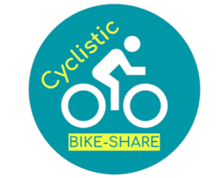

In 2016, Cyclistic launched a successful bike-share offering. Since then, the program has grown to a fleet of 5,824 bicycles that are geotracked and locked into a network of 692 stations across Chicago. The bikes can be unlocked from one station and
returned to any other station in the system anytime. Customers who purchase single-ride or full-day passes are referred to as casual riders. Customers
who purchase annual memberships are Cyclistic members. Cyclistic’s finance analysts have concluded that annual members are much more profitable than casual riders. The director of marketing Moreno has set a clear goal: Design marketing strategies aimed at converting casual riders into annual members.

Prior to importing into SQL, I used EXCEL for the initial cleaning of the individual files. First, I tried to remove any duplicates. Then I converted the columns “started_at” and “ended_at” to “Short Date”. I also created two new columns: ride_length and day_of_week. I created a ride_length column with a formula to subtract the started_at value from the ended_at value. I formatted the data in the column as “Time”. I created a “day_of_week” column and used the WEEKDAY function to create a numerical representation of the day of the week that each bicycle was checked out, where Sunday was represented by 1. Last, I filtered out the negatives and 0s and deleted these rows—sorted the sheet by “started at date” from oldest to newest. I then created pivot tables and did some simple calculations to make initial observations. Below is one example for December 2022.

Firstly, I uploaded the 12 CSV files as 12 separate monthly tables into MySQL to see whether the format time in EXCEL was preserved. Then I combined all 12 monthly tables into one table using INSERT IGNORE statements. I also investigated some trends and saved that information to CSV files.

After I cleaned and sorted my data in mySQL, I imported it into Tableau to create data visualizations.
1. In 2022, more people utilized their bikes as members than as casual users, yet casual users usually rode for longer durations. 2. Their most popular bikes are classic bikes, followed by electric bikes, and lastly docked bikes. 3. Typically, casual users take rides on weekends, while members have a more even distribution of rides throughout the week. 4. Bicycle utilization rises significantly during the 2nd quarter and reaches its maximum in the 3rd quarter.